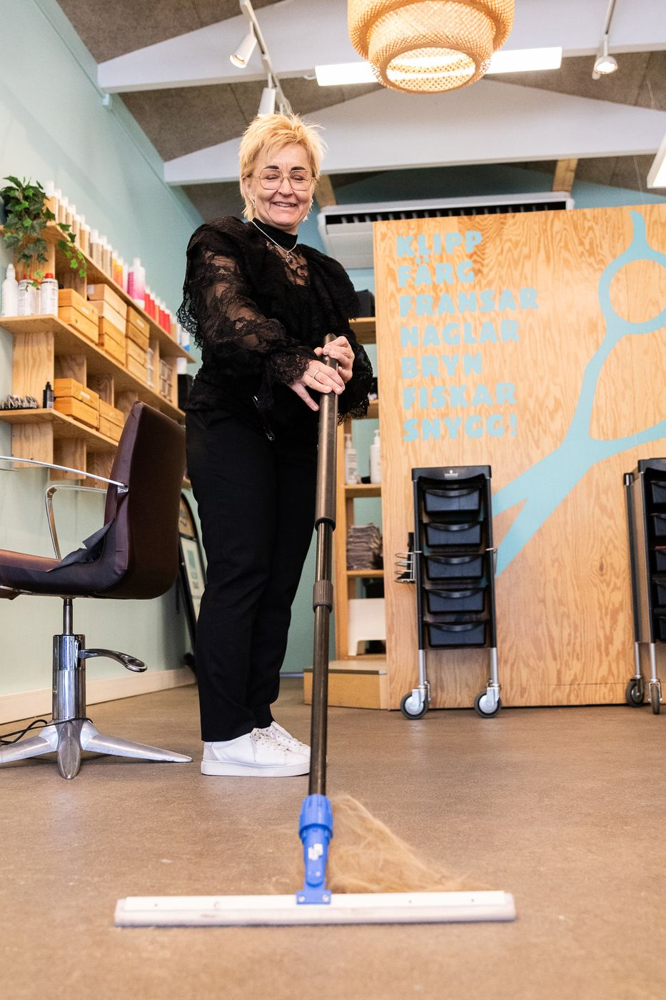

Här finns 46 artiklar om ledarskap, ekonomi och personal i salong. Alla utgår från samma sak: att ledarskap är ett hantverk som går att lära sig, precis som klippning.
Välj det som skaver mest just nu.
En per pelare. Läs den som handlar om din vardag.
Allt sparas i din egen webbläsare. Ingenting skickas vidare.

Trettio år i branschen, tjugo som salongsledare. Driver fortfarande en säsongssalong varje sommar och står själv på golvet.
Läs mer om migEtt kort resonemang, en länk och ett konkret tips. Inget annat.